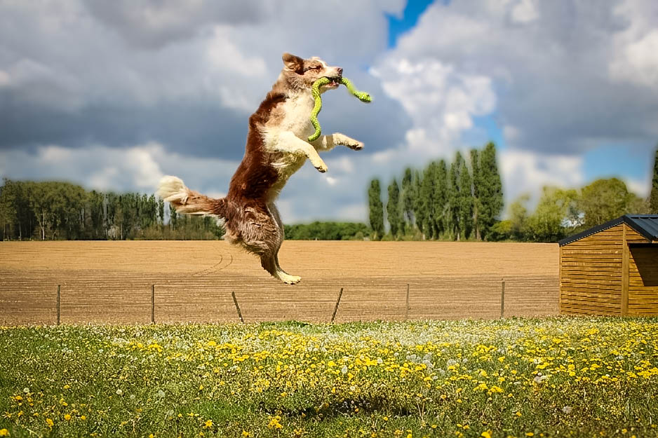

Vastgelegd in beweging
Actiefoto's en portretten die het karakter van jouw hond vangen.
Bij YURa Fit draait fotografie volledig om één middelpunt: de hond. Geen geposeerde taferelen met baasjes erbij, maar pure, onvervalste beelden waarin het karakter, de energie en de uitstraling van jouw viervoeter schitteren.
Wat mijn stijl uniek maakt, is de combinatie van een scherpe oog voor detail en mijn achtergrond in de hondensport. Dit helpt mij om de lichaamstaal en het gedrag van honden beter te begrijpen.
Dankzij mijn toegankelijke en rustige aanpak voelt elk dier zich al snel op zijn gemak. Het resultaat? Spontane, treffende beelden die een blijvende herinnering vormen aan het prachtige wezen dat jouw leven kleurt.

De hond volop in beweging, tijdens spel, training of sport. Foto's die energie en kracht vastleggen op het scherpste moment.
Rustige, sfeervolle close-ups die het karakter en de uitstraling van jouw hond tonen, met oog voor elk detail.
Van een speelse puppy-shoot tot een seniorenshoot als blijvend eerbetoon aan een trouwe metgezel.
Op een overeen te komen locatie die past bij de wensen van de eigenaar.
Een sessie duurt gemiddeld 30 tot 60 minuten.
Enkele dagen na de shoot zijn de foto's verkrijgbaar via WeTransfer.
Leg de mooiste momenten met jouw viervoeter vast op een unieke, blijvende manier.
Contacteer mij